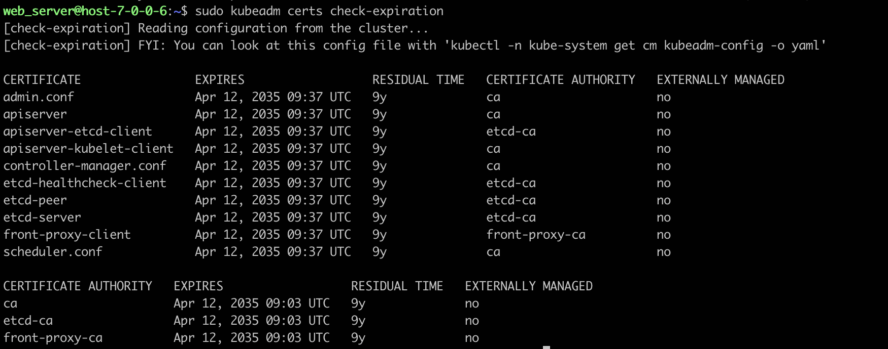
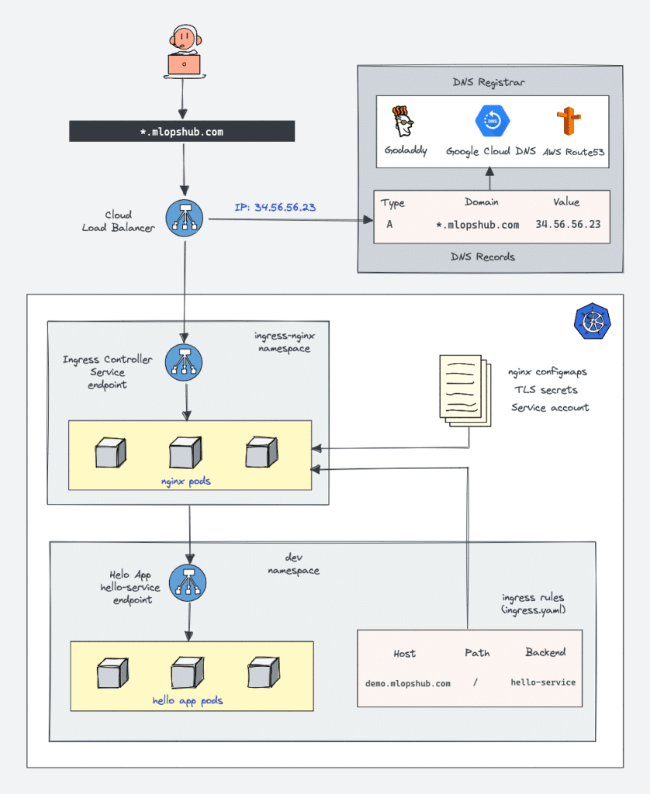
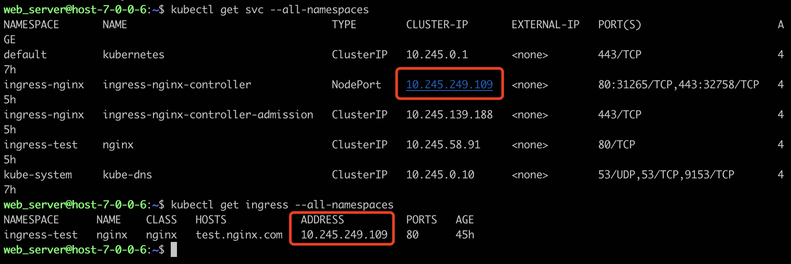

概述
- 本篇以总体视角总结Kubernetes 的最佳实践
一 K8S集群搭建
1 企业选型的7个关键考量维度
1.1 团队技能储备
- 1 二进制部署要求团队熟悉：
-
- Kubernetes组件通信协议（如API Server的REST API、etcd的gRPC）。
-
- 操作系统级调优（如systemd的CPUAccounting和MemoryLimit）。
- 2 基础设施规模
-
- 小规模（<50节点）：kubeadm性价比最高。
-
- 中大规模（50-500节点）：需评估是否需要定制调度器或网络插件。
-
- 超大规模（>500节点）：二进制部署几乎成为必选项。
- 3 合规与安全要求
-
- 金融、政务等行业通常需要二进制部署以满足审计颗粒度要求。
- 4 生命周期管理
-
- 频繁集群创建/销毁（如测试环境）优先选择kubeadm。
- 5 云生态集成
-
- 若深度依赖云厂商托管服务（如AWS EKS Anywhere），kubeadm更易集成。
- 6 成本模型
-
- 二进制部署的隐性成本：
-
-
- 人力成本：资深Kubernetes运维工程师薪资通常比普通运维高30%-50%。
-
-
-
- 时间成本：手动升级一个50节点集群可能需要2人天。
-
- 7 灾备与可恢复性
-
- 二进制部署需自定义备份方案（如etcd快照+组件二进制版本库）
-
- kubeadm可结合Velero实现标准化灾备。
2 宿主机必要配置
1 关闭swap
sudo swapoff -a
sudo sed -i 's/.*swap.*/#&/' /etc/fstab
2 内核参数
cat <<EOF | tee /etc/sysctl.d/k8s.conf
vm.swappiness = 0
net.bridge.bridge-nf-call-iptables = 1
net.bridge.bridge-nf-call-ip6tables = 1
net.ipv4.ip_forward = 1
EOF
# 不重启应用配置
sysctl --system
3 安装必要软件包
apt install kubelet kubeadm kubectl containerd
2 kubeadm 使用(需要root权限)
kubeadm init \
--kubernetes-version v1.27.4 \
--image-repository registry.aliyuncs.com/google_containers \
--apiserver-advertise-address 7.0.0.6 \
--service-cidr 10.245.0.0/16 \
--cri-socket unix://var/run/containerd/containerd.sock \
--pod-network-cidr 10.244.0.0/16
3 kubeadm 使用之后结果
[init] Using Kubernetes version: v1.27.4
[preflight] Running pre-flight checks
[preflight] Pulling images required for setting up a Kubernetes cluster
[preflight] This might take a minute or two, depending on the speed of your internet connection
[preflight] You can also perform this action in beforehand using 'kubeadm config images pull'
W0411 19:44:50.204967 828 checks.go:835] detected that the sandbox image "registry.cn-hangzhou.aliyuncs.com/google_containers/pause:3.6" of the container runtime is inconsistent with that used by kubeadm. It is recommended that using "registry.aliyuncs.com/google_containers/pause:3.9" as the CRI sandbox image.
[certs] Using certificateDir folder "/etc/kubernetes/pki"
[certs] Generating "ca" certificate and key
[certs] Generating "apiserver" certificate and key
[certs] apiserver serving cert is signed for DNS names [host-7-0-0-5 kubernetes kubernetes.default kubernetes.default.svc kubernetes.default.svc.cluster.local] and IPs [10.245.0.1 7.0.0.5]
[certs] Generating "apiserver-kubelet-client" certificate and key
[certs] Generating "front-proxy-ca" certificate and key
[certs] Generating "front-proxy-client" certificate and key
[certs] Generating "etcd/ca" certificate and key
[certs] Generating "etcd/server" certificate and key
[certs] etcd/server serving cert is signed for DNS names [host-7-0-0-5 localhost] and IPs [7.0.0.5 127.0.0.1 ::1]
[certs] Generating "etcd/peer" certificate and key
[certs] etcd/peer serving cert is signed for DNS names [host-7-0-0-5 localhost] and IPs [7.0.0.5 127.0.0.1 ::1]
[certs] Generating "etcd/healthcheck-client" certificate and key
[certs] Generating "apiserver-etcd-client" certificate and key
[certs] Generating "sa" key and public key
[kubeconfig] Using kubeconfig folder "/etc/kubernetes"
[kubeconfig] Writing "admin.conf" kubeconfig file
[kubeconfig] Writing "kubelet.conf" kubeconfig file
[kubeconfig] Writing "controller-manager.conf" kubeconfig file
[kubeconfig] Writing "scheduler.conf" kubeconfig file
[kubelet-start] Writing kubelet environment file with flags to file "/var/lib/kubelet/kubeadm-flags.env"
[kubelet-start] Writing kubelet configuration to file "/var/lib/kubelet/config.yaml"
[kubelet-start] Starting the kubelet
[control-plane] Using manifest folder "/etc/kubernetes/manifests"
[control-plane] Creating static Pod manifest for "kube-apiserver"
[control-plane] Creating static Pod manifest for "kube-controller-manager"
[control-plane] Creating static Pod manifest for "kube-scheduler"
[etcd] Creating static Pod manifest for local etcd in "/etc/kubernetes/manifests"
[wait-control-plane] Waiting for the kubelet to boot up the control plane as static Pods from directory "/etc/kubernetes/manifests". This can take up to 4m0s
[apiclient] All control plane components are healthy after 9.507522 seconds
[upload-config] Storing the configuration used in ConfigMap "kubeadm-config" in the "kube-system" Namespace
[kubelet] Creating a ConfigMap "kubelet-config" in namespace kube-system with the configuration for the kubelets in the cluster
[upload-certs] Skipping phase. Please see --upload-certs
[mark-control-plane] Marking the node host-7-0-0-5 as control-plane by adding the labels: [node-role.kubernetes.io/control-plane node.kubernetes.io/exclude-from-external-load-balancers]
[mark-control-plane] Marking the node host-7-0-0-5 as control-plane by adding the taints [node-role.kubernetes.io/control-plane:NoSchedule]
[bootstrap-token] Using token: xozdlf.n3mz4vejp0hj7tv7
[bootstrap-token] Configuring bootstrap tokens, cluster-info ConfigMap, RBAC Roles
[bootstrap-token] Configured RBAC rules to allow Node Bootstrap tokens to get nodes
[bootstrap-token] Configured RBAC rules to allow Node Bootstrap tokens to post CSRs in order for nodes to get long term certificate credentials
[bootstrap-token] Configured RBAC rules to allow the csrapprover controller automatically approve CSRs from a Node Bootstrap Token
[bootstrap-token] Configured RBAC rules to allow certificate rotation for all node client certificates in the cluster
[bootstrap-token] Creating the "cluster-info" ConfigMap in the "kube-public" namespace
[kubelet-finalize] Updating "/etc/kubernetes/kubelet.conf" to point to a rotatable kubelet client certificate and key
[addons] Applied essential addon: CoreDNS
[addons] Applied essential addon: kube-proxy
Your Kubernetes control-plane has initialized successfully!
To start using your cluster, you need to run the following as a regular user:
mkdir -p $HOME/.kube
sudo cp -i /etc/kubernetes/admin.conf $HOME/.kube/config
sudo chown $(id -u):$(id -g) $HOME/.kube/config
Alternatively, if you are the root user, you can run:
export KUBECONFIG=/etc/kubernetes/admin.conf
You should now deploy a pod network to the cluster.
Run "kubectl apply -f [podnetwork].yaml" with one of the options listed at:
https://kubernetes.io/docs/concepts/cluster-administration/addons/
Then you can join any number of worker nodes by running the following on each as root:
kubeadm join 7.0.0.5:6443 --token xozdlf.n3mz4vejp0hj7tv7 \
--discovery-token-ca-cert-hash sha256:35a1a8f8d608f70353742d7c13b039dbc7ea1e5fd75265196f1f288e4d29bd39
kubeadm join 7.0.0.6:6443 --token hyyuy8.6jtvtl52ysqkjytd \
--discovery-token-ca-cert-hash sha256:3ec1b161cd082f65e790af2f14d90e9514680b04749b4dcb6a22ca5d89dc7efc
4 安装calico网络插件
- 1 下载yaml文件
wget 'https://projectcalico.docs.tigera.io/manifests/calico.yaml'
- 2 修改镜像地址，从
docker.io修改为dockerpull.cn, 防止一会儿镜像拉不下来 -
3 修改Pod网络CIDR
-
4 实际应用
kubectl apply -f calico.yaml
5 证书有效期延长为10年
使用kubeadm搭建的K8S集群，默认证书有效期为1年, 正式使用的时候容易出问题.
1 查看当前有效期
sudo kubeadm certs check-expiration
2 使用update-kube-cert工具更新证书有效期为10年
bash update-kubeadm-cert.sh --cri containerd
3 更新config文件
# Backup existing config
cp $HOME/.kube/config $HOME/.kube/config_backup
# Copy new config
cp -i /etc/kubernetes/admin.conf $HOME/.kube/config
4 检查有效期是否更新
sudo kubeadm certs check-expiration
- 
6 加入新的Node节点
- 1 使用kubeadm加入对应apiserver节点
sudo kubeadm join 7.0.0.6:6443 --token hyyuy8.6jtvtl52ysqkjytd \
--discovery-token-ca-cert-hash sha256:3ec1b161cd082f65e790af2f14d90e9514680b04749b4dcb6a22ca5d89dc7efc
-
2 等待一小会儿，等网络插件ready
-
3 如果当时没有记住这个命令，后续再查找时只需执行:
kubeadm token create --print-join-command
会打印出对应的join信息
7 安装ingress-controller
-
架构图
-

curl -O 'https://raw.githubusercontent.com/kubernetes/ingress-nginx/controller-v1.12.1/deploy/static/provider/cloud/deploy.yaml'
相应进行修改， 确保ingress-controller对应的service能够通过NodePort访问到
web_server@host-7-0-0-6:~$ diff deploy.yaml ingress-nginx-deploy.yaml
366c366
< type: LoadBalancer
---
> type: NodePort
628a629,630
> annotations:
> ingressclass.kubernetes.io/is-default-class: "true"
-

-
对应ingress-nginx namespace下，ingress-nginx-controller service的ClusterIP 和ingress-test 下，name为nginx的ingress资源，Address是相同的
-
ingress-nginx-controller我们选择安装在ingress-nginx namespace下，并且以deloyment形式，在有限的几个Node上运行少量Pod
-
ingress-controller只是一类泛称，实际上有多种具体开源实际.
- ingress-controller在K8S集群内部署的时候，也至少有两种模式: 1 Deloyment + NodePort模式， 2 DaemonSet + hostNetwork模式
-
- 第一种适合业务量级小的场景，可以通过Deloyment运行少量ingress-controller Pod，然后业务可以创建多个VS+转发规则(也就是Ingress资源)
-
- 第二种适合业务量级大的场景，通过DaemonSet模式，每个Node上都运行一个ingress-controller，并且通常把端口设置为80和443，然后通过hostNetwork模式把Node的80和443占据.
-
Nodeport 和 HostNetwork 方案的比较
| 项目 | 优缺点 |
|---|---|
| 容器资源消耗 | nodePort：需要部署的 IngressController 容器较少，一个集群可以部署几个就可以了。 hostNetwork：需要在每个节点部署一个 IngressController 容器，因此总消耗资源较多。 |
| 对宿主机端口的占用 | nodePort：主要占用的是svc的nodePort端口。 hostNetwork: 需要占用物理机的80和443端口 |
| 网络流量的流转 | hostNetwork 访问: 每个 Node 节点都部署了IngressController容器，因此不需要对进入的流量进行转发 |
| SourceIP追踪 | 通过 nodePort 访问: Nginx 接收到的 HTTP 请求中的 SourceIP 将会被转换为接受该请求的 node 节点的 IP，而非真正的 Client 端 IP。 使用 hostNetwork 访问：IngressController 将会使用的是物理机的 DNS 域名解析(即物理机的 /etc/resolv.conf )。而无法使用内部的比如 CoreDNS 的域名解析。 |
- 配置相关APP、并使用ingress-controller进行转发
apiVersion: v1
kind: Namespace
metadata:
name: ingress-test
---
apiVersion: apps/v1
kind: Deployment
metadata:
name: nginx
namespace: ingress-test
labels:
app: nginx
spec:
selector:
matchLabels:
app: nginx
replicas: 2
template:
metadata:
labels:
app: nginx
spec:
containers:
- name: nginx
image: dockerpull.cn/nginx:1.14.2
ports:
- containerPort: 80
---
apiVersion: v1
kind: Service
metadata:
name: nginx
namespace: ingress-test
spec:
ports:
- port: 80
targetPort: 80
name: nginx
selector:
app: nginx
type: ClusterIP
---
apiVersion: networking.k8s.io/v1
kind: Ingress
metadata:
name: nginx
namespace: ingress-test
annotations:
nginx.ingress.kubernetes.io/use-regex: "true"
spec:
ingressClassName: nginx
rules:
- host: test.nginx.com
http:
paths:
- path: /
pathType: Prefix
backend:
service:
name: nginx
port:
number: 80
-
默认的NodePort范围和修改, 可以参考这里
-
https://www.cnblogs.com/unchch/p/17090133.html
- https://blog.csdn.net/weixin_46660849/article/details/130904799
8 查看Ingress
-
- 有对应的ingress name、class、并且有对应的service
二 集群
使用 KubeCm 管理多集群 KubeConfig
背景
- 如果您同时管理多个集群，就需要不停的修改
$HOME/.kube/config文件的内容。如果使用手工的方式，将多个集群的 KubeConfig 文件合并，则低效且可能出错。
解决方案
- KubeCm 是一个多集群 KubeConfig 访问凭证管理工具，支持展示、切换、添加、删除 KubeConfig 访问凭证到
$HOME/.kube/config文件中，方便多集群管理场景。
添加访问凭证
执行以下命令，添加访问凭证。
kubecm add -f kube.conf
查看集群列表
kubecm list
切换集群
kubecm switch
三 节点和节点池
建议事项
没有绝对通用的方法来选择合适的节点，因此需要您根据业务特点综合考虑小规格、大规格节点的优劣势来选择接节点类型。
常见的经验如下:
- 确定整个集群的正常状态下的资源需求总核数以及为保证可用性的冗余度。
-
- 例如业务峰值的负荷不超过 144 核，并且需要保留 10% 的冗余度，算得总的核数需求为 144/90%=160 核，那么可以选择 10 台 16 核 ECS。这样如果有一台 ECS 出现故障，剩余 ECS 仍可以支持现有业务正常运行。当然您也可以选择通过弹性伸缩的方式来实现可用性的保障，详情参见 弹性伸缩。
- 依据业务对计算存储网络等的要求及开发语言进行分类：
-
- 节点分为计算型（CPU 内存比 1:2 左右）、内存型（CPU 内存比 1:8）、通用型（CPU 内存比 1:4）等，业务也可以依据对于计算、存储、网络等资源的需要情况区分为计算密集型、IO 密集型等匹配选择合适的节点类型。例如 Java 类应用通常内存占用较高，建议考虑使用 CPU 内存比例为 1:8 的机型。
实例规格应用场景

四 网络
五 数据面最佳实践
六 控制面最佳实践
七 存储

| 对比项 | 块存储 EBS | 文件存储 NAS | 对象存储 TOS |
|---|---|---|---|
| 使用方式 | 像使用传统服务器硬盘一样，用户可以对挂载到 ECS 上的块存储（硬盘）做格式化、创建文件系统等操作。 | 符合标准文件协议，用户可以将文件系统挂载给 ECS，像使用本地文件目录一样。 | 具备标准 Restful API 接口，用户可以通过编程或第三方工具访问对象存储。 |
| 共享方式 | 数据不共享，或特殊的数台服务器共享卷，每台服务器使用独立的块存储（硬盘），多服务器之间数据隔离。 | 数据共享，支持多台服务器共享，多台服务器可挂载相同的文件系统，数据可以共享操作和访问。 | 数据共享，设备无限制，服务器、嵌入式设备、IoT 设备，所有调用相同路径，均可访问共享的对象存储数据。 |
| 场景对比 | 关系数据库、NoSQL 数据库、ELK 分布式日志搜索、企业办公应用、数据仓库、高性能计算等场景。 | 企业办公 OA、AI 训练、门户网站、游戏、DevOps、容器微服务、渲染等场景。 | 互联网应用、OTT 视频、视频监控、备份/归档、大数据/IoT 等场景。 |
八 调度
九 可观测性
十 安全
十一 迁移
十二 镜像加速
十三 解决方案
十四 弹性容器实例
十五 ETCD 优化
包括高可用部署、提高磁盘性能、提高 Etcd 进程的磁盘 IO 优先级、分离 Events 存储等
- 参考Etcd 优化
十六 备份
备份方案制定
物理备份：etcd 备份
保存某一个时刻的快照，快捷方便。
使用命令
ETCDCTL_API=3 /usr/local/bin/etcdctl --endpoints=https://127.0.0.1:2379 \
--cacert="${ETCD_CA_CERT}" --cert="${ETCD_CERT}" --key="${ETCD_KEY}" \
snapshot save "${BACKUP_DIR}/etcd-snapshot-${DT}.db"
逻辑备份：velero 备份 ，
允许用户自己选择备份的内容，比如单个 namespace、指定资源类型等。
- 查看配置的存储位置是否可用
velero backup-location get
- 实际备份, 选择对应的资源进行备份
velero create schedule xxx --schedule="0 1 * * *" --include-namespaces=prod --snapshot-volumes=false --default-volumes-to-restic=false --ttl=168h
优缺点
物理备份的优点是速度快，无论是备份还是回恢复，但缺点是元数据不可读，只能全部恢复。而逻辑备份正好相反，因此两者可以结合使用，既能快，又能有细粒度控制的能力。
十七 Operator
通过自定义资源，我们可以将应用抽象为一个整体，而不用去关心该应用是由哪些 Kubernetes 原生组件构成的，什么 Pods、Deployments、Services 或 ConfigMaps 统统交给 Operator 来管理。创建 Operator 的关键是自定义资源的设计，通过直接调用 Kubernetes API，编写自定义规则自动管理和维护 Kubernetes 集群中的应用，包括自动化安装、配置、更新、故障转移、备份恢复等等。这样的应用也被称为 Kubernetes 原生应用（Kubernetes-native application